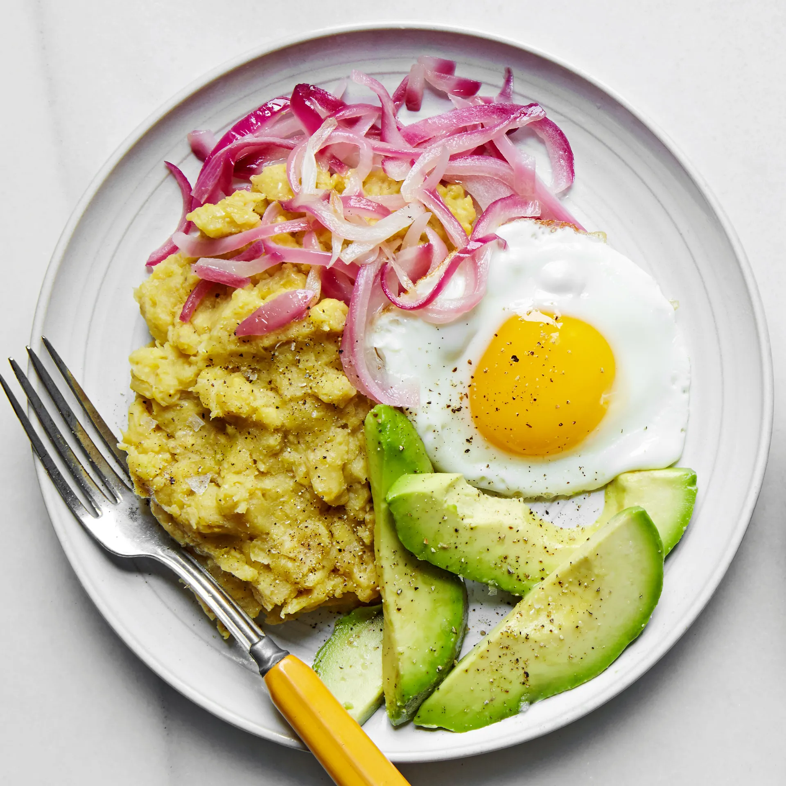

Mashed Plantains w/ Fried Eggs (Mangú de Plátanos)

Description
If you ask any Dominican what is their breakfast of choice, be prepared to hear mangú de plátanos. It is basically mashed plantains, a favorite
in every house, and the toppings vary from fried or scrambled eggs to fried local cheese to red onions. Since this is a country rich with avocado trees,
a few slices usually make it into this delicious breakfast dish.
Ingredients
- 2 large plantains, peeled and cut in half lengthwise
- 1/2 red onion, thinly sliced
- 2 tbsp white vinegar
- 1/2 tsp sea salt
- 1/2 tsp freshly cracked pepper
- 2 tbsp vegetable oil
- 2 eggs
- 1 avacado, pitted, peeled, and sliced
Steps
- Bring a large pot of salted water to a boil. Add the plantains and boil until fork-tender, about 25 minutes. Drain the plantains, reserving ½ cup (125 mL) of the cooking water.
- Meanwhile, place the red onion in a small bowl and cover with the vinegar.
- Transfer the plantains to a medium bowl and add the reserved cooking water, 1 tablespoon (15 mL) of the olive oil, salt, and pepper. Mash the plantains to the consistency of mashed potatoes.
- In a medium frying pan, heat the vegetable oil over medium heat. Drain the red onions and discard the vinegar. Add the onions to the pan and cook, stirring often, until soft and translucent, about 5 minutes. Transfer to a plate.
- In the same pan (no need to wipe clean), heat the remaining 1 tablespoon (15 mL) olive oil over medium heat. Carefully crack the eggs into the pan, leaving space between each egg. Cook for 3 to 4 minutes, or until the whites are cooked and no longer translucent and the yolks are still runny. (I prefer the eggs over easy for this dish.)
- To serve, divide the mashed plantain between plates and top with a fried egg, cooked onions, and a few slices of avocado. Season with salt and pepper to taste.